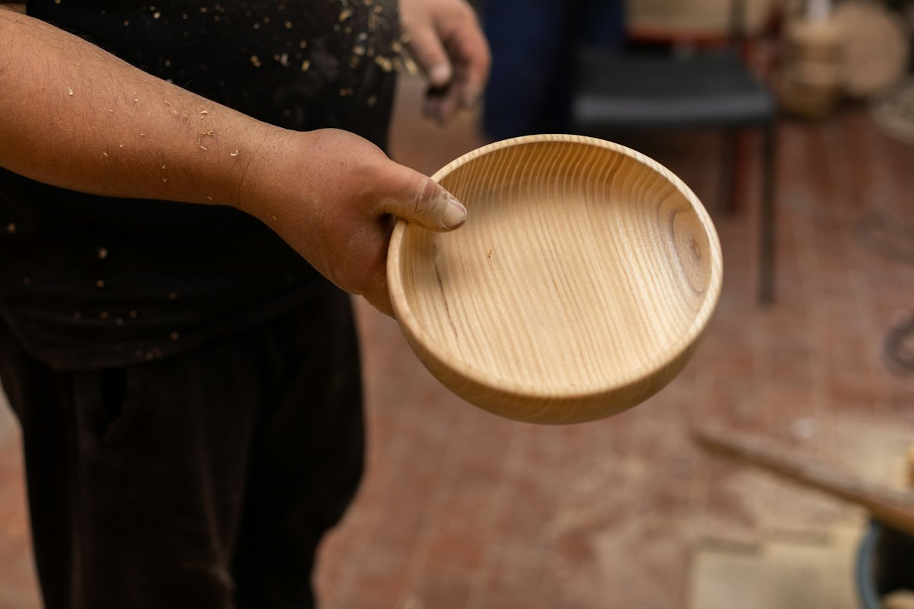
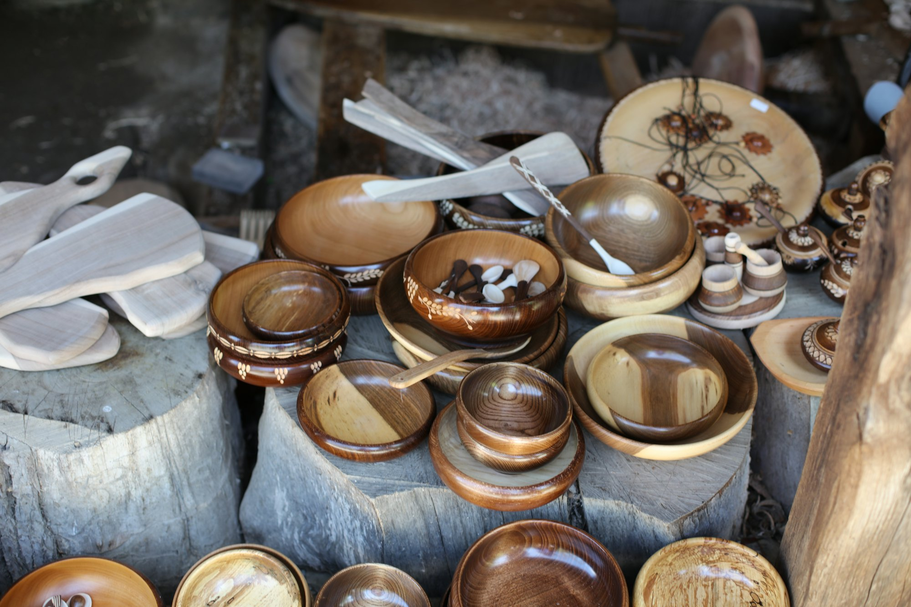
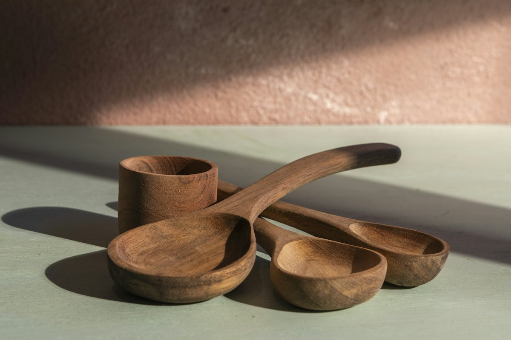
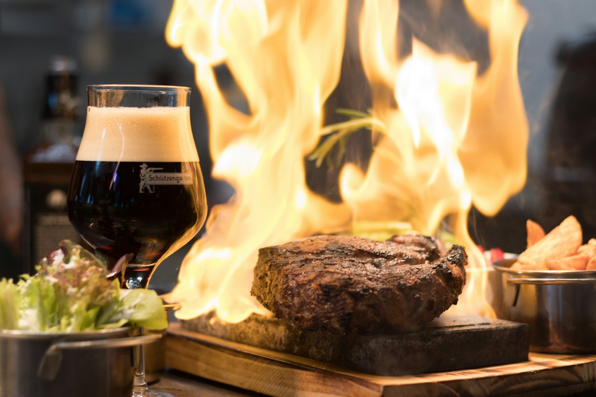
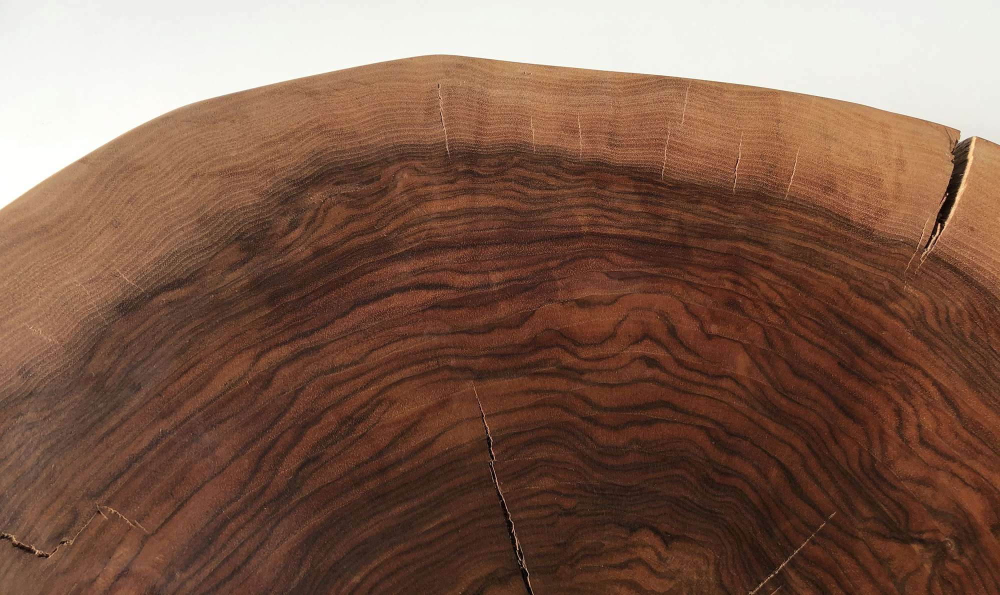

木製食器
和風・洋風を問わず使えるプレートや器。

業務用木製食器・富士山の熔岩石 東京都港区芝
1980年創立。業務用木製食器の企画提案・製造・販売と、富士山の熔岩石を扱っています。
木製食器
さくらの 木目。
個性的で温かみのある木目が特徴です。料理が引き立つ盛台シリーズも。
3Dのイメージです。実際の商品とは異なります
オードブルやワンプレートなど、和風・洋風を問わず使える木製食器。パンやスイーツの形から発想したユニークなプレートや、スタッキング性に優れた軽量のトレーもあります。
さくらの個性的で温かみのある木目を生かした器、料理が引き立つ盛台シリーズ。工場は長野県塩尻市木曽にあります。

和風・洋風を問わず使えるプレートや器。

指掛けが特徴の、軽くて重ねやすいトレーも。

熔岩石の取り扱い上の注意もご案内しています。

| お問い合わせ | お電話・メールで承ります |
|---|
カタログのご請求や商品のご相談は、お電話かメールでどうぞ。